<!DOCTYPE HTML>
<html lang="zh-CN">
<head><meta name="generator" content="Hexo 3.8.0">
    <!--Setting-->
    <meta charset="UTF-8">
    <meta name="viewport" content="width=device-width, user-scalable=no, initial-scale=1.0, maximum-scale=1.0, minimum-scale=1.0">
    <meta http-equiv="X-UA-Compatible" content="IE=Edge,chrome=1">
    <meta http-equiv="Cache-Control" content="no-siteapp">
    <meta http-equiv="Cache-Control" content="no-transform">
    <meta http-equiv="pragma" content="no-cache">
    <meta http-equiv="Cache-Control" content="no-cache, must-revalidate">
    <meta http-equiv="expires" content="Mon Apr 06 2020 02:12:39 GMT+0800 (CST)">
    <meta name="renderer" content="webkit|ie-comp|ie-stand">
    <meta name="apple-mobile-web-app-capable" content="张万众的博客 - 关注Spring Cloud、Docker">
    <meta name="apple-mobile-web-app-status-bar-style" content="black">
    <meta name="format-detection" content="telephone=no,email=no,adress=no">
    <meta name="browsermode" content="application">
    <meta name="screen-orientation" content="portrait">
    <meta name="theme-version" content="1.2.3">
    <meta name="root" content="/">
    
    <!--SEO-->

    <meta name="keywords" content="工作,Jenkins">


    <meta name="description" content="
本文基于当前最新的 LTS 版本 2.164.1 ，理论上适应于Jenkins 2.x所有版本。

一、下载前往https://jenkins.io/download/ ，按需下载。如用于生产，建议下载Long-term Support (LTS) 版本，这样能够获得相对长期的维护；如想体验...">


<meta name="robots" content="all">
<meta name="google" content="all">
<meta name="googlebot" content="all">
<meta name="verify" content="all">
    <!--Title-->


<title>Jenkins手把手图文教程[基于Jenkins 2.164.1] | 张万众的博客 - 关注Spring Cloud、Docker</title>


    <link rel="alternate" href="../../atom.html" title="张万众的博客 - 关注Spring Cloud、Docker" type="application/atom+xml">


    

    


<link rel="stylesheet" href="../../static/css/bootstrap.min-271a649e0635d6fa1b.css">
<link rel="stylesheet" href="../../static/css/font-awesome.min-ac2bebcf7fb5b26.css">
<link rel="stylesheet" href="../../static/css/style-6f3c140f6eee20e6591da00ec0.css">


    


    <script>
        var _hmt = _hmt || [];
        (function() {
            var hm = document.createElement("script");
            hm.src = "https://hm.baidu.com/hm.js?13766878cde148282622871dd245a973";
            var s = document.getElementsByTagName("script")[0];
            s.parentNode.insertBefore(hm, s);
        })();
    </script>


    

</head>

</html>
<!--[if lte IE 8]>
<style>
    html{ font-size: 1em }
</style>
<![endif]-->
<!--[if lte IE 9]>
<div style="ie">你使用的浏览器版本过低，为了你更好的阅读体验，请更新浏览器的版本或者使用其他现代浏览器，比如Chrome、Firefox、Safari等。</div>
<![endif]-->

<body>
    
    <nav class="main-navigation">
    <div class="container">
        <div class="row clearfix">
            <div class="col-md-12 column">
                <nav class="navbar navbar-default" style="background-color:#fff;border:0;margin-bottom:0" role="navigation">
                    <div class="navbar-header">
                        <button type="button" class="navbar-toggle" data-toggle="collapse" data-target="#navbar-collapse-1">
                            <span class="sr-only">切</span>
                            <span class="icon-bar"></span>
                            <span class="icon-bar"></span>
                            <span class="icon-bar"></span>
                        </button>
                        <a class="logo" href="../../index.html">
                            张万众的博客
                        </a>
                    </div>

                    <div class="collapse navbar-collapse" style="border:0;" id="navbar-collapse-1">
                        <ul class="nav navbar-nav">
                            
                                
                                    <li>
                                        <a href="../../about.html" target="_blank">
                                            <i class="fa fa-user"></i>
                                            关于我
                                        </a>
                                    </li>
                                
                            
                                
                                    <li>
                                        <a href="../../archives.html" target="_blank">
                                            <i class="fa fa-archive"></i>
                                            归档
                                        </a>
                                    </li>
                                
                            
                                
                                    <li class="dropdown">
                                        <a href="#" class="dropdown-toggle" data-toggle="dropdown" data-hover="dropdown">
                                            <i class="fa fa-fire"></i>
                                            系列课程
                                            <strong class="caret"></strong>
                                        </a>
                                        <ul class="dropdown-menu">
                                            
                                                <li>
                                                    <a href="../../docker/00-docker-lession-index.html" target="_blank">
                                                        <i class="fa "></i>
                                                        Docker系列教程
                                                    </a>
                                                </li>
                                            
                                                <li>
                                                    <a href="../../spring-cloud/spring-cloud-index.html" target="_blank">
                                                        <i class="fa "></i>
                                                        Spring Cloud系列教程
                                                    </a>
                                                </li>
                                            
                                                <li>
                                                    <a href="../../spring-boot/spring-boot-index.html" target="_blank">
                                                        <i class="fa "></i>
                                                        Spring Boot系列教程
                                                    </a>
                                                </li>
                                            
                                        </ul>
                                    </li>
                                
                            
                                
                                    <li class="dropdown">
                                        <a href="#" class="dropdown-toggle" data-toggle="dropdown" data-hover="dropdown">
                                            <i class="fa fa-book"></i>
                                            开源书
                                            <strong class="caret"></strong>
                                        </a>
                                        <ul class="dropdown-menu">
                                            
                                                <li>
                                                    <a href="../../books/rocketmq.html" target="_blank">
                                                        <i class="fa fa-rocket"></i>
                                                        RocketMQ开发者指南
                                                    </a>
                                                </li>
                                            
                                                <li>
                                                    <a href="../../books/skywalking.html" target="_blank">
                                                        <i class="fa fa-skyatlas"></i>
                                                        Skywalking 6.2.0中文文档
                                                    </a>
                                                </li>
                                            
                                        </ul>
                                    </li>
                                
                            
                                
                                    <li class="dropdown">
                                        <a href="#" class="dropdown-toggle" data-toggle="dropdown" data-hover="dropdown">
                                            <i class="fa fa-cog"></i>
                                            工具
                                            <strong class="caret"></strong>
                                        </a>
                                        <ul class="dropdown-menu">
                                            
                                                <li>
                                                    <a href="../../tools/markdown2.html" target="_blank">
                                                        <i class="fa "></i>
                                                        微信排版工具2.0
                                                    </a>
                                                </li>
                                            
                                        </ul>
                                    </li>
                                
                            
                        </ul>
                        
                            <form id="search-form" class="navbar-form navbar-right">
                                <div class="form-group input-group">
                                    <input type="text" id="local-search-input" class="form-control" placeholder="搜我...">
                                    <span class="input-group-btn">
                                        <a class="btn btn-default">
                                            <i class="fa fa-search"></i>
                                        </a>
                                    </span>
                                </div>
                                <div id="local-search-result" class="local-search-result-cls"></div>
                            </form>
                        
                    </div>
                </nav>
            </div>
        </div>
    </div>
</nav>

    <a href="javascript:;" target="_blank">
        
    </a>


    <section class="content-wrap">
        <div class="container">
            <div class="row">
                <main class="col-md-8 main-content m-post">
                    

<p id="process"></p>
<article class="post">
    <div class="post-head">
        <h1 id="Jenkins手把手图文教程[基于Jenkins 2.164.1]">
            
                Jenkins手把手图文教程[基于Jenkins 2.164.1]
            
        </h1>
        <div class="post-meta">
    
        <span class="categories-meta fa-wrap">
            <i class="fa fa-folder-open-o"></i>
            <a class="category-link" href="../../categories/工作/index.html">工作</a>
        </span>
    

    
        <span class="fa-wrap">
            <i class="fa fa-tags"></i>
            <span class="tags-meta">
                
                    <a class="tag-link" href="javascript:;">Jenkins</a> <a class="tag-link" href="../../tags/工作/index.html">工作</a>
                
            </span>
        </span>
    

    
        
        <span class="fa-wrap">
            <i class="fa fa-clock-o"></i>
            <span class="date-meta">2019/03/23</span>
        </span>
        
            <span class="fa-wrap">
                <i class="fa fa-eye"></i>
                <span id="busuanzi_value_page_pv"></span>
            </span>
        
    
</div>
        
        
    </div>
    
    <div class="post-body post-content" id="post-content">
        
    <div class="toc-article">
        <strong>
            目录
        </strong>
        <div class="toc-content">
            <ol class="toc"><li class="toc-item toc-level-2"><a class="toc-link" href="#一、下载"><span class="toc-text">一、下载</span></a></li><li class="toc-item toc-level-2"><a class="toc-link" href="#二、安装"><span class="toc-text">二、安装</span></a><ol class="toc-child"><li class="toc-item toc-level-3"><a class="toc-link" href="#2-1-通用安装方式"><span class="toc-text">2.1 通用安装方式</span></a></li><li class="toc-item toc-level-3"><a class="toc-link" href="#2-2-Docker安装方式"><span class="toc-text">2.2 Docker安装方式</span></a></li><li class="toc-item toc-level-3"><a class="toc-link" href="#2-3-初始化"><span class="toc-text">2.3 初始化</span></a></li></ol></li><li class="toc-item toc-level-2"><a class="toc-link" href="#三、配置"><span class="toc-text">三、配置</span></a><ol class="toc-child"><li class="toc-item toc-level-3"><a class="toc-link" href="#3-1-全局工具配置"><span class="toc-text">3.1 全局工具配置</span></a></li><li class="toc-item toc-level-3"><a class="toc-link" href="#3-2-邮件配置"><span class="toc-text">3.2 邮件配置</span></a></li></ol></li><li class="toc-item toc-level-2"><a class="toc-link" href="#四、使用案例1：构建项目"><span class="toc-text">四、使用案例1：构建项目</span></a></li><li class="toc-item toc-level-2"><a class="toc-link" href="#五、使用案例2：流水线"><span class="toc-text">五、使用案例2：流水线</span></a></li></ol>
        </div>
    </div>


        <blockquote>
<p>本文基于当前最新的 <code>LTS</code> 版本 <code>2.164.1</code> ，理论上适应于Jenkins 2.x所有版本。</p>
</blockquote>
<h2 id="一、下载"><a href="#一、下载" class="headerlink" title="一、下载"></a>一、下载</h2><p>前往<a href="javascript:;" target="_blank" rel="noopener">https://jenkins.io/download/</a> ，按需下载。如用于生产，建议下载<code>Long-term Support (LTS)</code> 版本，这样能够获得相对长期的维护；如想体验最新的功能，可尝试 <code>Weekly</code> 版本。</p>
<p>可以直接下载特定系统专属的版本，也可下载 <code>Generic Java package (.war)</code>  。本文下载的是 <code>Generic Java package (.war)</code> ，这样对所有系统都通用。</p>
<h2 id="二、安装"><a href="#二、安装" class="headerlink" title="二、安装"></a>二、安装</h2><h3 id="2-1-通用安装方式"><a href="#2-1-通用安装方式" class="headerlink" title="2.1 通用安装方式"></a>2.1 通用安装方式</h3><p>安装Jenkins非常简单，只需准备一个Tomcat（笔者使用的是Tomcat 8），然后将下载下来的 <code>jenkins.war</code> 丢到Tomcat的 <code>webapps</code> 目录中，然后启动Tomcat即可。本文，Tomcat使用的端口是 <code>18080</code> 。</p>
<blockquote>
<p>Tomcat下载与安装本文不做赘述，请自行百度。</p>
</blockquote>
<h3 id="2-2-Docker安装方式"><a href="#2-2-Docker安装方式" class="headerlink" title="2.2 Docker安装方式"></a>2.2 Docker安装方式</h3><p>使用如下命令即可：</p>
<figure class="highlight shell"><table><tr><td class="gutter"><pre><span class="line">1</span><br></pre></td><td class="code"><pre><span class="line">docker run -d -v jenkins_home:/var/jenkins_home -p 18080:8080 -p 50000:50000 jenkins/jenkins:lts</span><br></pre></td></tr></table></figure>
<h3 id="2-3-初始化"><a href="#2-3-初始化" class="headerlink" title="2.3 初始化"></a>2.3 初始化</h3><p>Jenkins启动片刻后，访问 <code>http://localhost:18080/jenkins</code> ，即可看到类似如下的界面：</p>
<p></p>
<p>由界面提示可知，Jenkins设置了一个初始的管理员密码，该密码存储在 <code>/Users/itmuch.com/.jenkins/secrets/initialAdminPassword</code>  文件中——只需可找到该文件，将其内容复制到图示的输入框中即可。点击 <code>继续</code> 按钮，将会出现类似如下的界面：</p>
<p>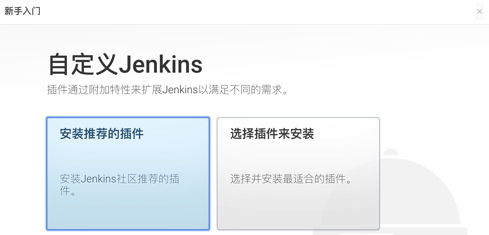</p>
<p>按需选择即可，建议初学者选择 <code>安装推荐的插件</code> ，因为该选项包含了Jenkins常用的一些插件，基本满足日常使用；高手则可选择 <code>选择插件来安装</code> ，该选项更具灵活性。这里，笔者以 <code>安装推荐的插件</code> 为例，点击后，将会看到类似如下的界面：</p>
<p>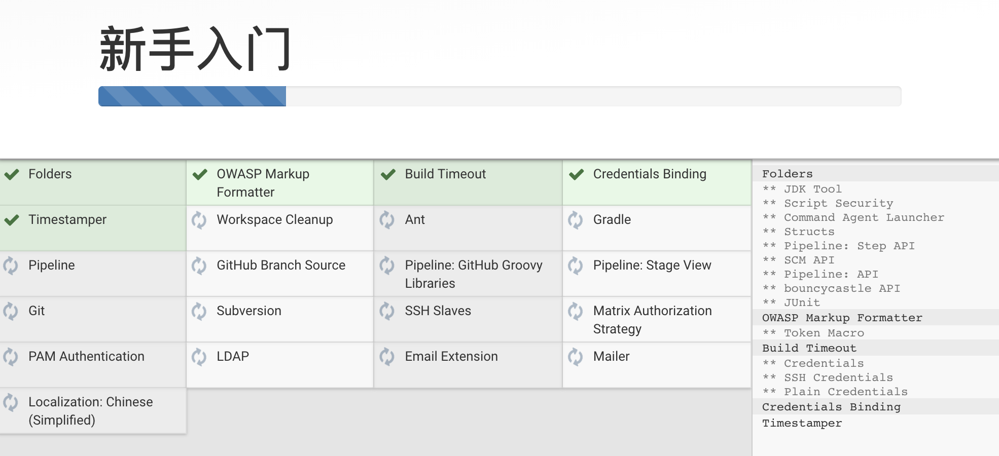</p>
<p>待插件安装完毕后（等待的时间长短视您的网络而定），将会看到类似如下的界面：</p>
<p>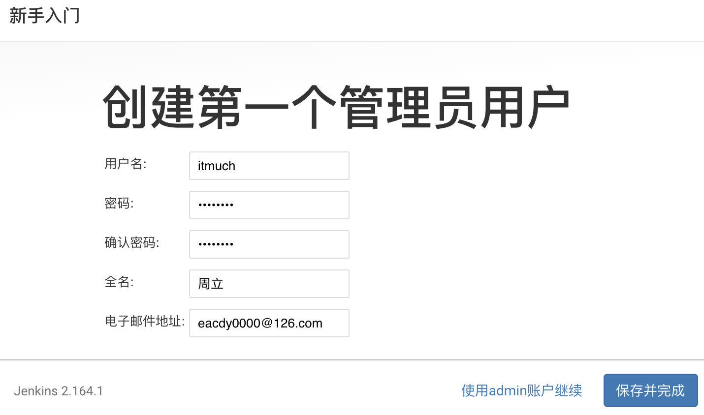</p>
<p>Jenkins要求我们创建第一个管理员账户。填入相关信息，并点击 <code>保存并完成</code> 按钮，Jenkins即可初始化完成。</p>
<blockquote>
<p><strong>TIPS</strong></p>
<p>安装完成后，如果访问 <code>http://localhost:18080/jenkins</code> 变成白板，而且没有反应，建议重启Jenkins服务器，并重新访问尝试。</p>
</blockquote>
<h2 id="三、配置"><a href="#三、配置" class="headerlink" title="三、配置"></a>三、配置</h2><p>下面，我们来配置Jenkins。</p>
<h3 id="3-1-全局工具配置"><a href="#3-1-全局工具配置" class="headerlink" title="3.1 全局工具配置"></a>3.1 全局工具配置</h3><ol>
<li><p>点击<code>系统管理</code> - <code>全局工具配置</code> ，如下图：</p>
<p></p>
</li>
<li><p>将会看到类似如下图的界面。按需添加<strong>JDK</strong>、<strong>Git</strong>、<strong>Gradle</strong>、<strong>Maven</strong>、<strong>Docker</strong>等配置。配置比较简单，这里就不赘述了。</p>
<p></p>
</li>
</ol>
<h3 id="3-2-邮件配置"><a href="#3-2-邮件配置" class="headerlink" title="3.2 邮件配置"></a>3.2 邮件配置</h3><ol>
<li><p>点击 <code>系统管理</code> - <code>系统设置</code> </p>
</li>
<li><p>配置管理员邮件地址：</p>
<p>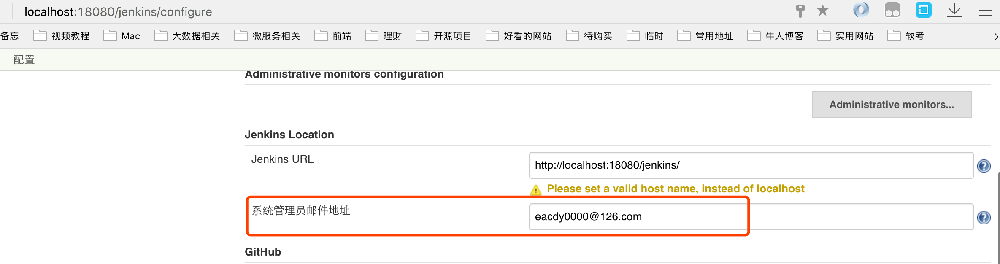</p>
</li>
<li><p>邮件发送配置：</p>
<p>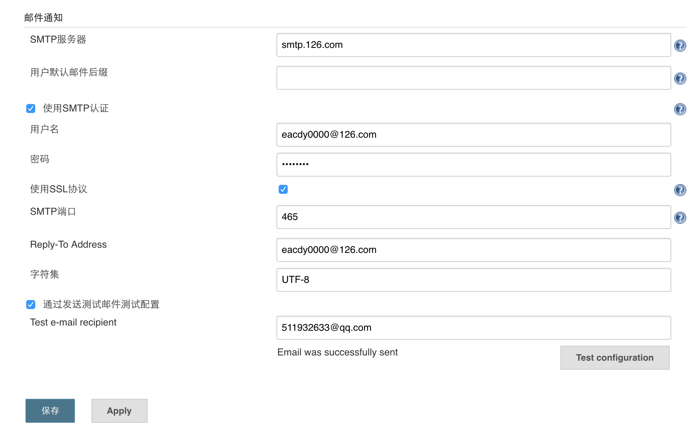</p>
<p><strong>需要注意的是：邮件通知所使用的地址必须与管理员邮箱地址一致，否则将无法正常发送邮件！！</strong></p>
</li>
</ol>
<p>当然，Jenkins还有很多其他的配置选项，读者可自行在Jenkins<strong>左侧的<code>系统管理</code> 自行挖掘</strong>。</p>
<h2 id="四、使用案例1：构建项目"><a href="#四、使用案例1：构建项目" class="headerlink" title="四、使用案例1：构建项目"></a>四、使用案例1：构建项目</h2><ol>
<li><p>在Jenkins首页，点击<code>开始创建一个新任务.</code> ，如下图所示：</p>
<p>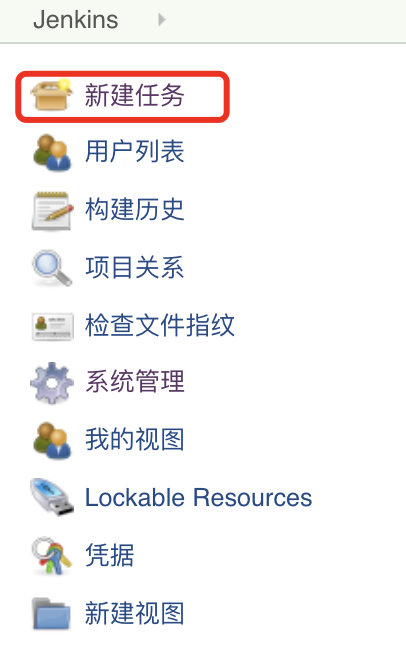</p>
</li>
<li><p>创建一个自由风格的项目，如下图所示：</p>
<p></p>
</li>
<li><p>点击确定后，将会看到配置详情：</p>
<p>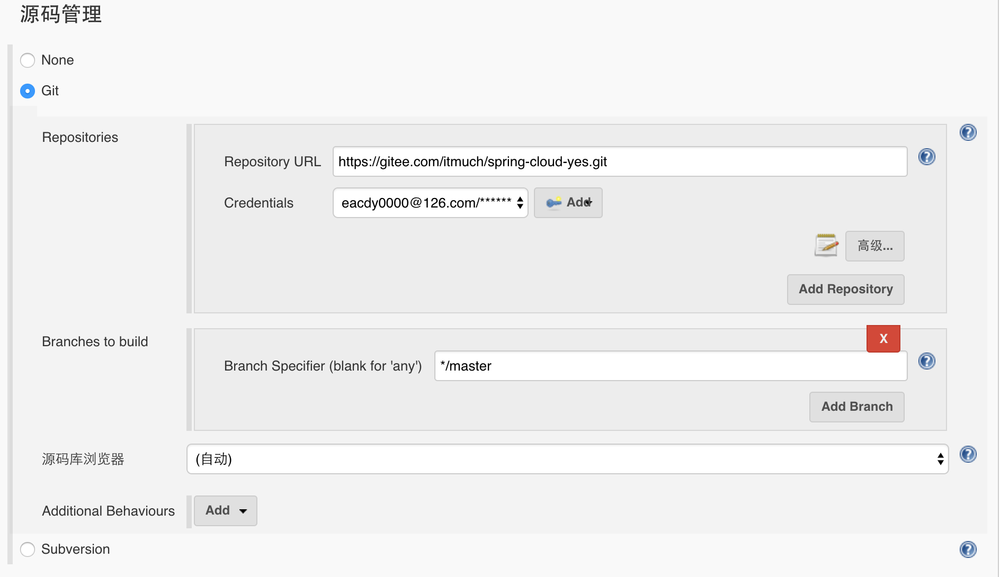</p>
<p>如图，请设置您想构建的项目的Git仓库地址、对应的账号密码、想要构建的Git分支。一般来说，源码库浏览器选择自动即可。</p>
</li>
<li><p>Maven配置</p>
<p>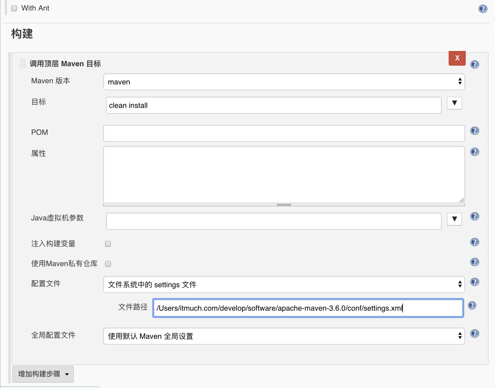</p>
<p>其中<code>Maven版本</code> 中所选择的 <code>maven</code> ，就是之前在<code>全局工具配置</code> 一节中的Maven配置名称。</p>
</li>
<li><p>如果想设置定时构建（例如：每天晚上八点构建）：</p>
<p>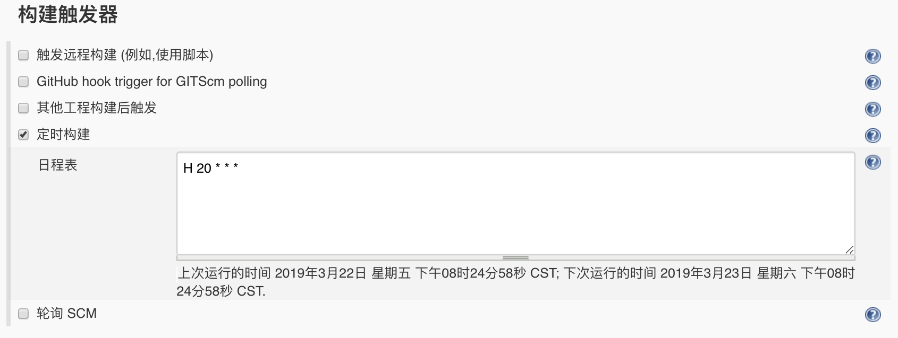</p>
</li>
<li><p>配置构建完成后操作（以发送邮件为例）</p>
<p>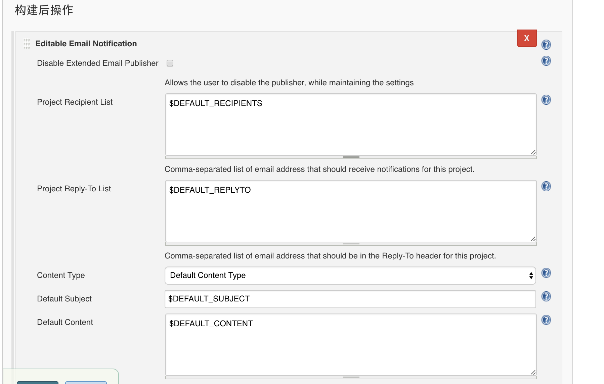</p>
</li>
<li><p>点击构建项目，执行构建</p>
<p>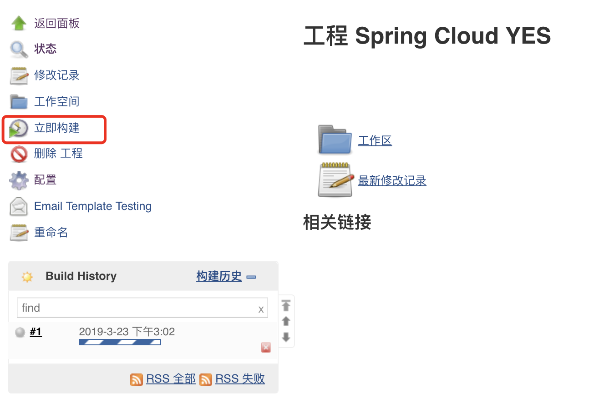</p>
</li>
</ol>
<h2 id="五、使用案例2：流水线"><a href="#五、使用案例2：流水线" class="headerlink" title="五、使用案例2：流水线"></a>五、使用案例2：流水线</h2><p><code>Jenkins 2.x</code> 内置了强大的流水线功能。</p>
<ol>
<li><p>创建一个 <code>流水线</code> 类型的任务</p>
</li>
<li><p>填写Pipeline脚本：</p>
<figure class="highlight groovy"><table><tr><td class="gutter"><pre><span class="line">1</span><br><span class="line">2</span><br><span class="line">3</span><br><span class="line">4</span><br><span class="line">5</span><br><span class="line">6</span><br><span class="line">7</span><br><span class="line">8</span><br><span class="line">9</span><br><span class="line">10</span><br><span class="line">11</span><br><span class="line">12</span><br><span class="line">13</span><br><span class="line">14</span><br><span class="line">15</span><br><span class="line">16</span><br><span class="line">17</span><br><span class="line">18</span><br><span class="line">19</span><br><span class="line">20</span><br></pre></td><td class="code"><pre><span class="line">node &#123;</span><br><span class="line">   <span class="keyword">def</span> mvnHome</span><br><span class="line">   stage(<span class="string">'Preparation'</span>) &#123; <span class="comment">// for display purposes</span></span><br><span class="line">      <span class="comment">// clone源码</span></span><br><span class="line">      git <span class="string">'https://gitee.com/itmuch/spring-cloud-yes.git'</span></span><br><span class="line">      <span class="comment">// 这里的maven-3.5.0必须跟全局工具配置中设置的Maven名称一致       </span></span><br><span class="line">      mvnHome = tool <span class="string">'maven-3.5.0'</span></span><br><span class="line">   &#125;</span><br><span class="line">   stage(<span class="string">'Build'</span>) &#123;</span><br><span class="line">      <span class="comment">// Run the maven build</span></span><br><span class="line">      <span class="keyword">if</span> (isUnix()) &#123;</span><br><span class="line">         sh <span class="string">"'$&#123;mvnHome&#125;/bin/mvn' clean install"</span></span><br><span class="line">      &#125; <span class="keyword">else</span> &#123;</span><br><span class="line">         bat(<span class="regexp">/"$&#123;mvnHome&#125;\bin\mvn" clean install/</span>)</span><br><span class="line">      &#125;</span><br><span class="line">   &#125;</span><br><span class="line">   stage(<span class="string">'Email'</span>) &#123;</span><br><span class="line">      mail <span class="string">bcc:</span> <span class="string">''</span>, <span class="string">body:</span> <span class="string">'构建成功。'</span>, <span class="string">cc:</span> <span class="string">'511932633@qq.com'</span>, <span class="string">from:</span> <span class="string">'eacdy0000@126.com'</span>, <span class="string">replyTo:</span> <span class="string">''</span>, <span class="string">subject:</span> <span class="string">'构建成功'</span>, <span class="string">to:</span> <span class="string">'eacdy0000@126.com'</span></span><br><span class="line">   &#125;</span><br><span class="line">&#125;</span><br></pre></td></tr></table></figure>
<p>如代码所示，我们编写了一个流水线，该流水线包含三个阶段：</p>
<ul>
<li>Preparation：在该阶段中，我们Clone源码，同时，定义了一个变量叫mvnHome。</li>
<li>Build：在该阶段中，我们执行 <code>mvn clean install</code> 命令，其中针对操作系统做了判断。</li>
<li>Email：如果构建成功，就发送邮件到 <code>511932633 @ qq.com</code> 。</li>
</ul>
</li>
<li><p>Pipeline脚本功能非常强大，默认支持数十个指令！你可能担心指令学习的成本，但这种担心其实是多余的——只需点击下图中的 <code>流水线语法</code> 按钮，<strong>就可以傻瓜化地使用Pipeline语法啦</strong>！</p>
<p>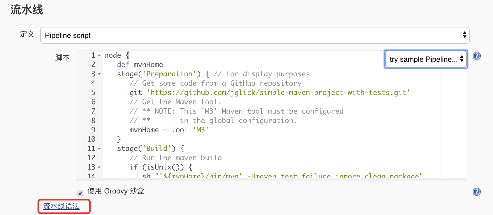</p>
</li>
</ol>

        <h2>相关文章</h2><ul><li><a href="../git-repo-sync-with-gitlab-mirrors/index.html">使用GitLab Mirrors同步Git仓库</a></li><li><a href="../../work-sum-log4j-to-logback/index.html">将应用的log4j换成logback</a></li><li><a href="../../other/idea-mybatis-warning/index.html">Intellij IDEA中Mybatis Mapper自动注入警告的6种解决方案</a></li><li><a href="../../other/doc-generate/index.html">分享：如何生成漂亮的静态文档说明页</a></li><li><a href="../../other/mybatis-optional-support/index.html">我最喜欢的Mybatis 3.5新特性——Optional支持</a></li></ul>
    </div>
    
    <div class="post-footer">
        <div class="col-sm-10">
            <div>
                <b>本文链接</b>：<a href="" target="_blank">Jenkins手把手图文教程[基于Jenkins 2.164.1]</a>
            </div>
            <div>
                
                    转载声明：本博客由张万众创作，采用 <a href="javascript:;" target="_blank"> CC BY 3.0 CN </a> 许可协议。可自由转载、引用，但需署名作者且注明文章出处。如转载至微信公众号，请在文末添加作者公众号二维码。
                
            </div>
            <div>
                
            </div>
        </div>
        <div class="col-sm-2">
            
        </div>
    </div>
</article>

<div class="article-nav prev-next-wrap clearfix">
    
        <a target="_blank" href="../../spring-boot/global-lock/index.html" class="pre-post btn btn-default" title="Spring Boot 2实现分布式锁——这才是实现分布式锁的正确姿势！">
            <i class="fa fa-angle-left fa-fw"></i><span class="hidden-lg">上一篇</span>
            <span class="hidden-xs">Spring Boot 2实现分布式锁——这才是实现分布式锁的正确姿势！</span>
        </a>
    
    
        <a target="_blank" href="../../spring-cloud/finchley-25/index.html" class="next-post btn btn-default" title="跟我学Spring Cloud（Finchley版）-25-Spring Cloud Sleuth与Zipkin配合使用">
            <span class="hidden-lg">下一篇</span>
            <span class="hidden-xs">跟我学Spring Cloud（Finchley版）-25-Spring Cloud Sleuth与Zipkin配合使用</span><i class="fa fa-angle-right fa-fw"></i>
        </a>
    
</div>


    <div id="comments">
        
   <p>评论系统未开启，无法评论！</p>

    </div>


                </main>
                
    <aside class="col-md-4 sidebar">
        
        <div class="widget about-me">
    <div class="row">
        <div class="col-md-5">
            
        </div>
        <div class="col-md-7">
            <a class="series-a" href="javascript:void(0)">公众号</a>
            <ul>
                <li>• 技术干货推送</li>
                <li>• 免费资料领取</li>
                <li><b>• 扫码领取更多惊喜</b></li>
            </ul>
        </div>
    </div>
    
        <div class="row">
            <div class="col-md-5">
                
            </div>
            <div class="col-md-7">
                <a class="series-a" href="javascript:void(0)">小程序</a>
                <ul>
                    <li>• 原创笔记</li>
                    <li>• 独家心法</li>
                    <li><b>• 扫码领取</b></li>
                </ul>
            </div>
        </div>
    
</div>


        
        
    <div class="ad">
        <div class="row">
            <div class="col-md-12">
                <a href="javascript:;" rel="nofollow" target="_blank">
                    
                </a>
            </div>
        </div>
    </div>


        
        <div class="widget">
    <div class="row">
        <div class="col-md-3">
            
        </div>
        <div class="col-md-9">
            <a class="series-a" target="_blank" href="../../spring-cloud/spring-cloud-index.html">Spring Cloud系列教程</a>
            <p>全面、通俗易懂的Spring Cloud教程</p>
        </div>
    </div>
    <div class="row">
        <div class="col-md-3">
            
        </div>
        <div class="col-md-9">
            <a class="series-a" target="_blank" href="javascript:;">Spring Cloud Alibaba视频教程</a>
            <p>全网唯一，你值得拥有</p>
        </div>
    </div>
    <div class="row">
        <div class="col-md-3">
            
        </div>
        <div class="col-md-9">
            <a class="series-a" target="_blank" href="../../docker/00-docker-lession-index.html">Docker系列教程</a>
            <p>Docker系列</p>
        </div>
    </div>
    <div class="row">
        <div class="col-md-3">
            
        </div>
        <div class="col-md-9">
            <a class="series-a" target="_blank" href="../../spring-boot/spring-boot-index.html">Spring Boot系列教程</a>
            <p>Boot是基石...</p>
        </div>
    </div>
</div>


        
        
    <div class="widget">
        <h3 class="title">分类</h3>
        <ul class="category-list"><li class="category-list-item"><a class="category-list-link" href="javascript:;"><i class="fa" aria-hidden="true">Docker</i></a><span class="category-list-count">31</span></li><li class="category-list-item"><a class="category-list-link" href="javascript:;"><i class="fa" aria-hidden="true">Kubernetes</i></a><span class="category-list-count">2</span></li><li class="category-list-item"><a class="category-list-link" href="javascript:;"><i class="fa" aria-hidden="true">Spring Boot</i></a><span class="category-list-count">6</span></li><li class="category-list-item"><a class="category-list-link" href="javascript:;"><i class="fa" aria-hidden="true">Spring Cloud</i></a><span class="category-list-count">94</span></li><li class="category-list-item"><a class="category-list-link" href="javascript:;"><i class="fa" aria-hidden="true">Spring Cloud Alibaba</i></a><span class="category-list-count">16</span></li><li class="category-list-item"><a class="category-list-link" href="javascript:;"><i class="fa" aria-hidden="true">Spring Cloud Stream</i></a><span class="category-list-count">1</span></li><li class="category-list-item"><a class="category-list-link" href="../../categories/其他/index.html"><i class="fa" aria-hidden="true">其他</i></a><span class="category-list-count">13</span></li><li class="category-list-item"><a class="category-list-link" href="../../categories/安装教程/index.html"><i class="fa" aria-hidden="true">安装教程</i></a><span class="category-list-count">7</span></li><li class="category-list-item"><a class="category-list-link current" href="../../categories/工作/index.html"><i class="fa" aria-hidden="true">工作</i></a><span class="category-list-count">20</span></li></ul>
    </div>


        
        
        
        

        
    </aside>

            </div>
        </div>
    </section>
    <footer class="main-footer">
    <div class="container">
        <div class="row">
        </div>
    </div>
</footer>

<a id="back-to-top" class="icon-btn hide">
	<i class="fa fa-chevron-up"></i>
</a>


    <div class="copyright">
    <div class="container">
        <div class="row">
            <div class="col-sm-12">
                <div class="busuanzi">
    
        访问量:
        <strong id="busuanzi_value_site_pv">
            <i class="fa fa-spinner fa-spin"></i>
        </strong>
        &nbsp; | &nbsp;
        访客数:
        <strong id="busuanzi_value_site_uv">
            <i class="fa fa-spinner fa-spin"></i>
        </strong>
        &nbsp; <strong>Since 2018-12-26</strong>
    
</div>

            </div>
            <div class="col-sm-12">
                <span>Copyright &copy; 2017
                </span> |
                <span>
                    Powered by <a href="javascript:;" class="copyright-links" target="_blank" rel="nofollow">Hexo</a>
                </span> |
                <span>
                    Theme by <a href="javascript:;" class="copyright-links" target="_blank" rel="nofollow">ITMuch</a>
                </span>
            </div>
        </div>
    </div>
</div>

<script src="../../static/js/jquery.min.js"></script>
<script src="../../static/js/bootstrap.min.js"></script>
<script src="../../static/js/bootstrap-hover-dropdown.min.js"></script>

    <script src="../../static/js/search-3f4fbd0557c869ca0516ebb5f.js"></script>


    <script async="" src="../../static/js/busuanzi.pure.mini.js"></script>


<script src="../../static/js/app-da10bb3b2ae5c8348d2bd2cc3faf.js"></script>


</body>
